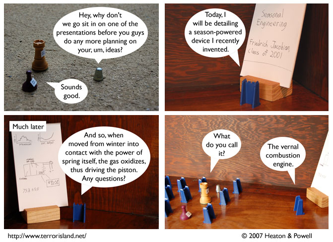

Strip #128
— Friday, April 6, 2007
The charts in panel 3 contain hidden clues
Notes, Thoughts, &c.
Ben’s Notes
Hey, this strip number’s another power of 2! I don’t remember seeing one of those since at least 50 strips ago.
Lewis’s Notes
The vernal combustion engine was one of the first ideas I came up with for Terror Island. We’ve been sitting on that one for close to a year now, just waiting for the right moment to strike. I mean, spring.
I wrote Lewis’s comments today. -Ben